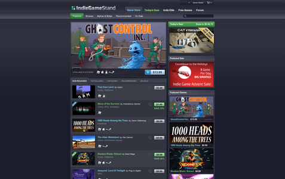
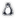

IndieGameStand
|  |
| IndieGameStand |
IndieGameStand  ist eine kommerzielle Vertriebsplattform, welche zusätzlich Indie-Spiele nach dem Pay-What-You-Want-Modell vertreibt. Je nach gewählter Summe erhält man zusatzlich noch Keys um die Spiele auf anderen Vertriebsplattformen freizuschalten und andere Boni - wie. z.B. Soundtracks. Im Gegensatz zu ähnlichen Modellen, wie z.B. dem Humble Indie Bundle, werden die Spieletitel nicht als Bundle angeboten. Stattdessen wird alle 96 Stunden ein neuer Titel eingestellt. Die jeweiligen Spieletitel sind in der Regel DRM-frei. Ein Teil des Erlöses wird, an eine vom Entwickler gewählte Wohltätigkeitsorganisation, gespendet.
ist eine kommerzielle Vertriebsplattform, welche zusätzlich Indie-Spiele nach dem Pay-What-You-Want-Modell vertreibt. Je nach gewählter Summe erhält man zusatzlich noch Keys um die Spiele auf anderen Vertriebsplattformen freizuschalten und andere Boni - wie. z.B. Soundtracks. Im Gegensatz zu ähnlichen Modellen, wie z.B. dem Humble Indie Bundle, werden die Spieletitel nicht als Bundle angeboten. Stattdessen wird alle 96 Stunden ein neuer Titel eingestellt. Die jeweiligen Spieletitel sind in der Regel DRM-frei. Ein Teil des Erlöses wird, an eine vom Entwickler gewählte Wohltätigkeitsorganisation, gespendet.
Gekaufte Titel können anschließend aus der Bibliothek heruntergeladen werden. Hier findet man, sofern verfügbar, ebenfalls Keys für Desura, Steam oder GOG.com um das Spiel ebenfalls bei den anderen Plattformen zu erhalten. Über Updates wird man per E-Mail informiert.

Hinweis:
Bei den Angeboten ist darauf zu achten ob der jeweilige Titel auch für  Linux verfügbar ist.
Seiten in der Kategorie „IndieGameStand“:
- Erstellt mit Inyoka
-
 2004 – 2017 ubuntuusers.de • Einige Rechte vorbehalten
2004 – 2017 ubuntuusers.de • Einige Rechte vorbehalten
Lizenz • Kontakt • Datenschutz • Impressum • Serverstatus -
Serverhousing gespendet von